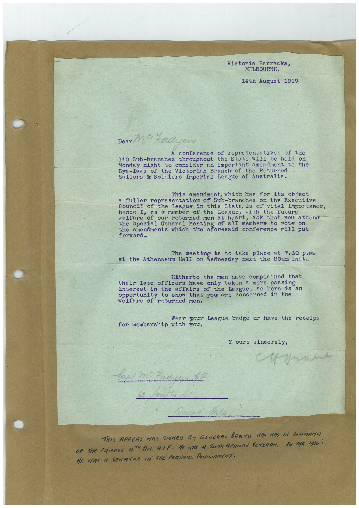

Book 1 · scan 001


Description
Transcription
Context
Review notes
Compare the machine draft with the scan. Handwriting and names need human review.
Artifacts
Edit the artifacts field in this note’s frontmatter to change these records. This summary is generated.
B01-S001-A01 — Letter — Book 1, scan 001
Types: Typed document, Letter
Scope: Whole scanned page; individual items can be split out during review.
Caption: Not mapped yet.
Caption source: Not recorded yet.
Caption status: unmapped
Machine transcription
Victoria Barracks, MELBOURNE, 14th August 1919 Denn Me Yadyen conference of representatives of the 140 Sub-branches throughout the State will be held on Monday night to consider an important amendment to the Bye-Iaws of the Victorian Branch of the Returned Sailors & Soldiers Imperial League of Australia. This amendment, which has for its object a fuller representation of Sub-branches on the Executive the League in this State, is of vital importance, hence I, as a member of the League, of our returned men at heart, ask that you attend the special General Meeting of all members to vote on the amendments which the aforesaid conference will put The meeting is to take place at 7.30 p,m. at the Athenaeum Hall on Wednesday next the 20tm inst. Hitherto the men have complained that their late officers have anly taken a mere passing interest in the affairs of the League, so here is an opportunity to show that you are concerned in the welfare of returned men. Wear your League badge or have the receipt for membership with you, ours sincerely, THIS APPEAL WAS SIGNED BY GENERAL BRAND WHO HAS IN COmmANTE OF THE FAMOUS HTH DA. A.J.F. He MAS A SOUTH AFRICAN VETERAN. BA TAR 1930 S HE HAS A SENATOR IN THE FEDERAL PARLiAMENT.